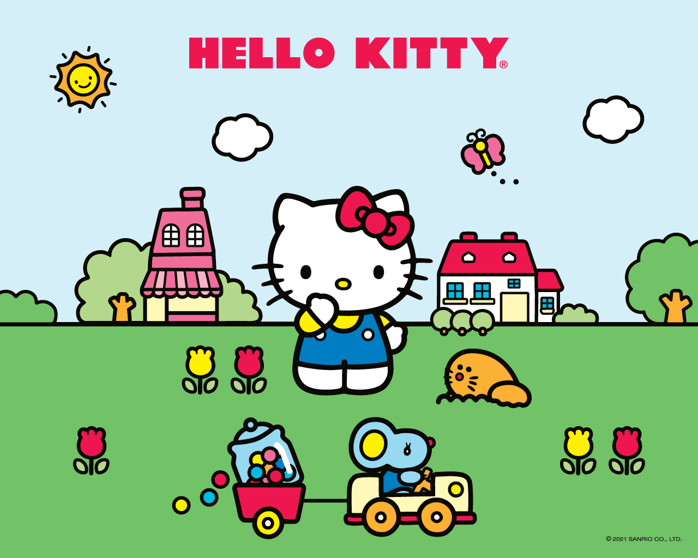

A história da Hello Kitty
Quem nunca se perguntou como surgiu a Hello Kitty, ou até mesmo quis saber um pouco mais sobre as origens dessa fofura toda? E para as Hello Kitty Lovers de plantão, fica a pergunta: Quem aí já sabe contar a história da personagem favorita? Se você ainda não conhece a verdadeira história da Hello, se liga no post que preparamos para hoje Criada em 1974 por uma designer da empresa Sanrio, a Hello Kitty nasceu no dia 1º de Novembro, após um período de guerra e caos no Japão. Sua missão principal é promover felicidade e incentivar a amizade entre as pessoas. Assim como os demais personagens criados pela empresa, a Hello Kitty então representa a busca por um mundo melhor, especialmente através da sua fofura que inspira amor e afeto e de seu lacinho que simboliza a junção de dois corações. Agora que descobrimos a verdadeira história da Hello, sabemos que nossa diva da fofura veio ao mundo para deixar sorrisos por onde passa, exatamente como vem fazendo até então. Não tem como não se encantar, não é?! ♥
Sobre a Sanrio !
A Sanrio foi fundada no Japão em 1960 pelo Sr. Shintaro Tsugi. Mais conhecida por seu ícone global Hello Kitty, a empresa é criadora de mais de 400 personagens incluindo My Melody, Chococat, Keroppi, Badtz-Maru, Little Twin Stars, Aggretsuko, Gudetama, entre outros.
A marca está presente mundialmente nos mais diversos segmentos, como confecção, calçados, acessórios, beleza, higiene pessoal, presentes, papelaria, alimentos, brinquedo, entre outros. Ela é baseada na filosofia "small gift, big smile®", e seus personagens tem o propósito de encantar, promover amizades e colocar sorrisos nos rostos das pessoas.
Hello Kitty
Aniversário: 1° de novembro
A Hello Kitty é uma garota feliz e divertida, que adora espalhar alegria pelo mundo. Ela mora com seus pais e sua irmã gêmea, Mimmy,em Londres, na Inglaterra. Seu lema é: “Muitos amigos nunca são demais!” Por isso, ela está sempre cercada de amigos e adora fazer novas amizades.
Keroppi
Aniversário: 10 de Julho
O Keroppi é um sapinho que mora com sua família em uma grande casa a beira do lago Donut. Ele e seus amigos adoram jogos, especialmente beisebol e bumerangue. Na maior parte do tempo, ele está com seu melhor amigo, a lesminha Denden.
Chococat
Aniversário: 10 de Maio
O Chococat é um gatinho que pode parecer meio atrapalhado, mas está sempre por dentro das últimas novidades, graças aos seus bigodes antenados. Seu nome vem do seu focinho cor de chocolate.
My Melody
Aniversário: 18 de Janeiro
A My Melody nasceu na floresta de Mary Land. Ela é super legal e faz amizade facilmente. Sua marca registrada é um lindo capuz, que sua avó costurou especialmente para ela.
Badtz Maru
Aniversário: 1º de Abril
O Badtz-Maru é um pinguim muito radical, que curte a sua vida “bem humorada” em Gorgeoustown. Ele atrai muita atenção quando anda com seu jacaré de estimação, o Pochi. E, também toca violino e piano, mas só finge, pois não é muito bom nisso.
Pompompurin
Aniversário: 16 de Abril
O Pompompurin é um tranquilo filhotinho Golden Retriever que tem um enorme talento para cochilar. Ele ama a frase “vamos sair”, tanto quanto odeia a palavra “ficar”. Faz amizade com todos que encontra, e tem um sonho de ser realmente grande. Seu hobby é colecionar os sapatos de seus donos e tem seu próprio esconderijo secreto.
Kuromi
Aniversário: 31 de Outubro
Kuromi é muito bagunceira e sempre causa confusões. Por trás de sua aparência radical, ela é super feminina. Adora escrever em seu diário e ler romances. Sua cor preferida é a preta. Ela é amiga da My Melody, mas encara essa amizade com uma certa competição.
Little Twin Stars
Aniversário: 24 de Dezembro
Kiki e Lala são pequenas estrelas gêmeas que nasceram na Constelação da Compaixão, na Galáxia dos Sonhos. Eles chegaram à Terra e espalham felicidade a todos que encontram pela frente